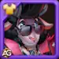

Guide de Fluffy – Hero Wars: Dominion Era
- By: Alexandre Domingos. .
Entendez-vous ce léger bêlement au milieu du champ de bataille ? Fluffy ressemble à un simple agneau inoffensif, mais cache quelque chose de bien plus sombre sous sa laine : un Archdemon enfermé dans un corps adorable.
Autrefois un agneau ordinaire, Fluffy est devenue le réceptacle du démon Baalthazar après un rituel sombre ayant mal tourné. Incapable de prendre pleinement le contrôle, Baalthazar est forcé de coexister avec Fluffy : tandis que l’agneau tisse des liens étranges avec les Gardiens, l’Archdemon ne voit qu’un véhicule pour sa vengeance. Douce innocence à l’extérieur, colère millénaire à l’intérieur.

Qui est Fluffy dans Hero Wars: Dominion Era ?
Fluffy est un paradoxe vivant : une créature attendrissante au premier regard, mais liée à la puissance d’un Archdemon ancien. Ce guide vous présente son histoire, son rôle en combat et comment l’intégrer efficacement dans vos équipes.
- Rôle principal : Mage
- Rôle secondaire : Soutien
- Attribut principal : Intelligence
- Position : Pas encore définie officiellement
Avantages et inconvénients — Hero Wars: Dominion Era
✅ Avantages
- Excellent contre les équipes axées sur les attaques de base : l'ultime confère l'immunité aux attaques de base et le renvoi des dégâts, neutralisant les attaquants physiques.
- Résurrection d'équipe : To Hell and Back ressuscite les alliés avec des bonus, transformant des défaites en opportunités.
- Interruption d'ultimes : Usurpation peut annuler les ultimes ennemis — idéal contre les compositions dépendantes des ultimes.
- Bon scaling en fin de partie : Mark of Death et les artefacts augmentent les dégâts et la pénétration en fin de partie.
- Synergie avec pavillons/artefacts : bénéficie fortement des pavillons 'Recovery' et 'Readiness' ainsi que des artefacts défensifs pour atténuer l'auto-dégât.
❌ Inconvénients
- Risque d'auto-dégât : certaines mécaniques de contre (p.ex. Usurpation lorsqu'elle se déclenche) infligent de l'auto-dégât ; assurez-vous d'avoir suffisamment de PV et de sustain.
- Vulnérable aux bursts magiques : de lourds dégâts magiques peuvent dépasser les soins et contourner la protection de l'ultime.
- Dépendance aux compétences/cooldowns : Usurpation a un temps de recharge et une chance d'annulation — pas toujours fiable.
- Le positionnement est critique : nécessite un placement adéquat pour tirer parti de 'Readiness' et des fenêtres de résurrection.
- Contres : les silences, les dissipations et la réduction du niveau des compétences affaiblissent fortement Fluffy.
Guide des compétences de Fluffy – Hero Wars: Dominion Era
Fluffy n’est pas un simple support. Son kit mélange protection démoniaque, résurrection de masse et fort contre-jeu face aux actions clés de l’ennemi. Maîtriser chaque compétence te permettra de transformer la fureur de Baalthazar en ta plus grande arme.
Pacte avec le Diable (Deal with the Devil – Ultime)
Des flammes infernales enveloppent tous les héros alliés pendant 12 secondes. Tant que l’effet est actif, les alliés sont immunisés contre les dégâts des attaques de base ennemies et renvoient ces dégâts aux attaquants. Chaque seconde, les flammes infligent également des dégâts aux alliés en fonction de leurs points de vie maximum.
C’est une compétence à haut risque et haute récompense : elle offre une protection énorme contre les équipes centrées sur les attaques de base, mais le dégât constant sur tes propres héros peut être dangereux si la guérison ne suit pas. Lance-la au bon moment pour maximiser les dégâts renvoyés tout en limitant l’auto-dégât.
Priorité d’amélioration : Très élevée – C’est la compétence emblématique de Fluffy. L’immunité et le renvoi des attaques de base peuvent annuler complètement les carries physiques. À monter en premier pour augmenter la durée et rendre l’auto-dégât plus gérable.
Informations d'animation de la compétence
- Formule : (80% attaque magique + 200 * niveau) — dégâts renvoyés max : 117.961.
- Durée : 12 secondes
- Dégâts des flammes : 1% de la Vie max par seconde
Aller en Enfer et Retour (To Hell and Back)
Baalthazar protège son troupeau de la mort pendant 10 secondes. Tous les alliés qui meurent durant cette période seront ressuscités lorsque l’effet prend fin. Ils récupèrent une partie de leurs points de vie et obtiennent un bonus de dégâts physiques et magiques jusqu’à la fin du combat.
En pratique, c’est une sorte de "deuxième manche" pour toute ton équipe. Le timing est crucial : utilise-la avant une grosse explosion de dégâts ou avant la rotation des ultimes ennemis. Des alliés qui reviennent plus puissants peuvent renverser des combats qui semblaient déjà perdus.
Priorité d’amélioration : Élevée – La résurrection change complètement le rythme des combats prolongés. En l’améliorant, tu augmentes la vie restaurée et le bonus de dégâts des alliés ressuscités. À prioriser juste après l’ultime.
Informations d'animation de la compétence
- Formule – Soin : (200% attaque magique + 400 * niveau) = 281.902
- Formule – Augmentation d'attaque : (20% attaque magique + 50 * niveau) = 29.490
- Durée : 10 secondes
- Recharge initiale : 10 secondes
- Recharge : 40 secondes
Marque de Mort (Mark of Death)
Fluffy accumule des Marques de Mort sur elle-même, ce qui augmente sa pénétration d’armure magique. Lorsque Fluffy meurt, les Marques explosent et infligent des dégâts aux héros ennemis pour chaque Marque active. Jusqu’à 10 Marques peuvent être accumulées.
Cette compétence passive transforme la mort de Fluffy en menace réelle. Plus elle a accumulé de Marques, plus l’explosion finale est puissante. Elle fonctionne particulièrement bien dans les compositions agressives où tu acceptes de sacrifier Fluffy en échange d’un énorme retour de dégâts. La pénétration magique supplémentaire renforce aussi le reste de son kit.
Priorité d’amélioration : Moyenne – Utile pour augmenter les dégâts magiques et punir l’ennemi lorsque Fluffy tombe, mais moins centrale que ses compétences de protection et de résurrection. À monter après les compétences principales.
Informations d'animation de la compétence
- Formule – Dégâts par Marque : (65% attaque magique + 200 * niveau) = 100.718
- Formule – Pénétration magique par Marque : (5% attaque magique + 5 * niveau + 100) = 6.498
- Marques (max) : 10
- Recharge : 10 secondes
Usurpation
Lorsqu’un ennemi utilise une compétence ultime, Fluffy annule cette compétence et inflige des dégâts à la cible. En même temps, Fluffy subit des dégâts basés sur ses propres points de vie maximum. Cette compétence peut être activée une fois toutes les 20 secondes, et la probabilité d’annulation dépend du niveau de la cible.
C’est la compétence la plus "anti-play" de son kit. Annuler la mauvaise ultime ennemie au bon moment peut décider de l’issue d’un match. Toutefois, l’auto-dégât et le long temps de recharge t’empêchent de t’y reposer en permanence. Elle brille surtout contre les équipes qui dépendent d’une ou deux ultimes clés.
Priorité d’amélioration : Élevée – En l’améliorant, tu augmentes la probabilité d’annuler les ultimes ennemies et les dégâts infligés. Indispensable contre les compositions basées sur le burst. À améliorer en parallèle ou juste après To Hell and Back.
Informations d'animation de la compétence
- Formule – Dégâts infligés : (50% attaque magique + 150 * niveau + 100) = 77.076
- Auto-dégâts : 20% de la Vie max de Fluffy (échelle : (-0.15 * niveau + 39.5))
- Recharge : 20 secondes
- Recharge initiale : 1 seconde
- Remarque : Probabilité d’annulation réduite contre les cibles de niveau supérieur à 130.
Fluffy – Priorité d’amélioration des compétences
Voici l’ordre recommandé pour améliorer les compétences de Fluffy et exploiter tout son potentiel :
- Pacte avec le Diable (Deal with the Devil – Ultime) – Cœur du kit, immunité et renvoi contre les attaques de base.
- Aller en Enfer et Retour (To Hell and Back) – Résurrection de zone avec bonus de dégâts, décisive dans les combats prolongés.
- Usurpation – Annule les ultimes ennemies, cruciale contre les compositions orientées burst.
- Marque de Mort (Mark of Death) – Pénétration magique et explosion à la mort, puissante mais plus situationnelle.
Priorité d’évolution des artefacts de Fluffy – Hero Wars: Dominion Era
Les artefacts de Fluffy renforcent son style de soutien démoniaque risqué dans Hero Wars: Dominion Era, en apportant de la défense magique à l’équipe, des points de vie supplémentaires et un meilleur scaling de dégâts magiques. Voici dans quel ordre les améliorer et pourquoi.

Baalthazar's Skull (Artefact d’arme)
Bonus de statistiques : Défense magique +50 190
Lorsque Fluffy lance son ultime Pacte avec le Diable (Deal with the Devil) (déclencheur Shieldbreaker), Baalthazar's Skull s’active et confère pendant 9 secondes des statistiques supplémentaires à toute l’équipe. Ce bonus de défense magique de zone s’intègre parfaitement à son kit : les attaques de base sont déjà neutralisées, et l’artefact aide ton équipe à encaisser les bursts magiques ennemis pendant que les flammes infernales continuent de brûler tes alliés.
Priorité d’évolution : Très élevée – Protège tout le groupe précisément au moment où Fluffy est la plus vulnérable. Comme l’effet est en zone et se déclenche de façon fiable avec l’ultime, c’est l’artefact le plus impactant en PvP comme en PvE.

Tome of Arcane Knowledge (Artefact de livre)
Bonus de statistiques : Santé +83 649 ; Attaque magique +16 731
Ce grimoire est la principale source de survie et de dégâts personnels de Fluffy. Les points de vie supplémentaires l’aident à supporter à la fois les dégâts de recul de Pacte avec le Diable et le burst adverse, tandis que l’attaque magique renforce toutes ses compétences, des flammes infernales aux explosions de Marque de Mort (Mark of Death).
Priorité d’évolution : Élevée – Excellent mélange de statistiques offensives et défensives pour Fluffy. Améliore fortement sa fiabilité dans les combats prolongés, mais reste légèrement derrière Baalthazar's Skull, qui profite directement à toute l’équipe.

Ring of Intelligence (Artefact de statistiques)
Bonus de statistiques : Intelligence +6 249
- Attaque magique obtenue via l’Intelligence : +18 747
- Défense magique obtenue via l’Intelligence : +6 249
- Attaque physique obtenue via l’Intelligence : +6 249
L’Intelligence étant l’attribut principal de Fluffy, cet anneau fait progresser l’ensemble de ses statistiques : plus d’attaque magique pour ses compétences et ses buffs, davantage de défense magique pour sa survie, ainsi qu’un léger bonus d’attaque physique. Cependant, le bénéficiaire direct reste presque uniquement Fluffy, sans effet de zone ni utilité supplémentaire pour l’équipe.
Priorité d’évolution : Moyenne-élevée – Excellent scaling sur le long terme, mais chaque niveau investi se ressent moins que sur l’arme et le livre. À privilégier une fois Baalthazar's Skull et le Tome of Arcane Knowledge bien montés et la survie de base de Fluffy assurée.
Meilleur skin pour Fluffy
Les skins de Fluffy modifient les effets visuels et les attributs ; ci‑dessous la priorité recommandée d'évolution selon l'utilité en combat, en équilibrant le scaling d'Intelligence et les besoins défensifs de chaque affrontement.

Skin Par Défaut
Gain de stats : Intelligence +1 365
- - attaque magique via Intelligence : +4 095
- - défense magique via Intelligence : +1 365
- - attaque physique via Intelligence : +1 365
Chaque point d'Intelligence donne : trois points d'attaque magique ; un point de défense magique ; un point d'attaque physique supplémentaire si l'Intelligence est la stat principale.
Priorité d'évolution : Très élevée – Les compétences de Fluffy scalent avec l'Attaque magique, donc le Skin Par Défaut améliore ses dégâts globaux et sa valeur de support tout en ajoutant de la Défense magique via l'Intelligence. Dans la plupart des builds, c'est l'un de ses meilleurs upgrades polyvalents.
Total de pierres de skin Intelligence pour niveau max :  30.825
30.825

Skin Bibliothécaire
Gain de stats : Armure +10 650
Priorité d'évolution : Très élevée – Une armure massive améliore grandement la survie contre les équipes physiques et réduit le risque du self‑damage du Hellfire ; prioriser contre les compositions physiques.
Total de pierres de skin Intelligence pour niveau max : 55.410

Skin Mascarade
Gain de stats : Défense magique +10 650
Priorité d'évolution : Élevée – Une excellente réponse aux équipes à burst magique, couvrant l'une des principales faiblesses de Fluffy et l'aidant à survivre assez longtemps pour maintenir Hellfire et lancer To Hell and Back.
Total de pierres de skin Intelligence pour niveau max : 55.410
Priorité d'évolution des glyphes de Fluffy
Ordre recommandé des glyphes pour Fluffy, fondé sur l'utilité en combat et la synergie avec son kit.

1er Glyphe – Attaque Magique : +6 500
Gain : Attaque Magique +6 500
Priorité : Haute – Augmente Hellfire, les explosions de Mark of Death et la pression générale ; important une fois la survie assurée.

2e Glyphe – Vie : +62 200
Gain : Vie +62 200
Priorité : Très élevée – Crucial pour survivre au self‑damage du Hellfire et permettre à To Hell and Back de ressusciter fiablement les alliés ; priorité maximale pour les combats soutenus.

3e Glyphe – Armure : +6 500
Gain : Armure +6 500
Priorité : Moyenne‑haute – Aide contre les équipes physiques et fonctionne très bien avec le skin Bibliothécaire ; prioriser contre le méta physique.

4e Glyphe – Pénétration Magique : +6 500
Gain : Pénétration Magique +6 500
Priorité : Haute – Booste Mark of Death et les dégâts magiques ; important pour maximiser la puissance offensive après avoir sécurisé la durabilité.

5e Glyphe – Intelligence : +1 135
Gain : Intelligence +1 135
- - attaque magique via Intelligence : +3 405
- - défense magique via Intelligence : +1 135
- - attaque physique via Intelligence : +1 135
Priorité : Moyenne – Bon scaling long terme mais moins immédiat que Vie ou Attaque Magique pour le kit de Fluffy.
Meilleur Patronage pour Fluffy
Compagnons recommandés classés par utilité pour Fluffy : priorisez la survie et les compétences qui synergiques avec son kit magique et les dégâts auto-infligés de Hellfire.
1ère place :

Khorus — Bonus : Attaque magique et Armure. Compétence : Resilience Aura. Convertit une partie des dégâts magiques infligés en bouclier pour le maître (limite env. 100000 formule), augmentant grandement la survie face au recul du Hellfire.
2ème place :

Axel — Bonus : Attaque magique et Armure. Compétence : limite les dégâts d'une seule attaque à une fraction de la vie max (env. 44.995% formule). Excellent contre les bursts physiques.
3ème place :

Merlin — Bonus : Attaque magique et Pénétration magique. Compétence : augmente la vitesse des compétences magiques (~ 50.004% formule). Bon pour l'offensive une fois la survie assurée.
4ème place :

Biscuit — Bonus : Attaque magique et Armure. Compétence : réduit les soins reçus par l'ennemi (~ 30.005% formule). Utile contre les compositions avec beaucoup de soin, mais moins prioritaire que les boucliers/mitigation.
Meilleurs fanions de guerre pour Fluffy — Hero Wars
Fanions recommandés pour renforcer la survie de Fluffy et la résurrection d'équipe, en priorisant l'augmentation des soins, la génération d'énergie anticipée et la suppression des compétences ennemies.

Fanion de Récupération :
Augmente tous les soins de 10 % — idéal lorsque Fluffy utilise Pacte avec le Diable et la résurrection d'équipe.
Avantage pour Fluffy et l'équipe : Récupération augmente directement la part de soins de To Hell and Back et aide les alliés à survivre aux mécaniques d'auto-dégâts et aux fortes rafales, rendant la résurrection plus sûre et plus fiable.

Fanion de Préparation :
Donne de l'énergie au héros le plus en arrière au début du combat et périodiquement — évolue avec les motifs rouges.
Avantage pour Fluffy et l'équipe : Placé en arrière, Fluffy peut lancer son ultime et sa résurrection beaucoup plus tôt, sécurisant des fenêtres défensives et surprenant l'ennemi ; excellent pour le contrôle du tempo.

Fanion du Déclin :
Réduit les soins de l'équipe ennemie de 10 %.
Avantage pour Fluffy et l'équipe : Le Déclin est un excellent contre lorsque les adversaires comptent sur de lourds soins ; il empêche les ennemis d'annuler facilement vos dégâts et réduit l'efficacité des soins qui contrecarreraient vos résurrections.

Fanion du Gel :
Tous les 18 secondes réduit de 2 le niveau des compétences ennemies pendant 8 secondes.
Avantage pour Fluffy et l'équipe : Le Gel aide à neutraliser les équipes dépendantes des compétences (réduction des ultimes et de la puissance des skills), rendant les annulations et résurrections de Fluffy plus efficaces en réduisant les rafales et contrôles entrants.
Conclusion
Fluffy est un support/mage spécialisé qui excelle contre les équipes basées sur les attaques automatiques grâce à Deal with the Devil et peut renverser les combats avec To Hell and Back. Priorisez la survie (glyphes Vie/Armure et skins défensives), augmentez d'abord l'ultime et la résurrection, et utilisez des artefacts comme le Crâne de Baalthazar pour protéger l'équipe. Attention aux rafales magiques puissantes et au contrôle de foule — un bon timing et un bon positionnement sont essentiels. En bref : excellent dans les combats longs et les metas physiques lorsqu'il est bien équipé et joué.

Découvrez de nouvelles compétences avec nos guides phares !


Laissez votre avis !
Avez-vous aimé notre guide de Fluffy ? Y a-t-il quelque chose que vous n'avez pas compris ou souhaitez-vous proposer des modifications ? Nous vous invitons à rejoindre la section commentaires sur la page du blog Alexandre Games. N'hésitez pas à donner votre avis, à poser vos questions et à partager vos suggestions.
Cliquez sur le bouton ci-dessous pour commencer :